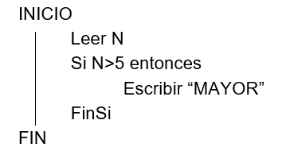
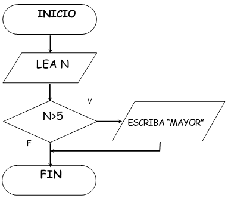

Los algoritmos tienen dos formas de representación o lenguajes algorítmicos, que son:
No gráficos
Tambien llamados Pseudocódigo. Representan en forma descriptiva los pasos que debe realizar un algoritmo para solucionar el problema. El pseudocódigo es una mezcla de lenguaje de programación y español (o cualquier otro idioma) que se emplea, en programación estructurada, para realizar el pre-diseño de un programa. El pseudocódigo usa palabras que indican cada paso del proceso a realizar.

Gráficos
Tambien llamados Diagrama de flujo. Representan gráficamente los pasos que debe realizar un algoritmo para solucionar el problema. Esta representación gráfica se da cuando varios símbolos (que indican diferentes procesos en la computadora), se relacionan entre sí mediante líneas que indican el orden en que se deben ejecutar los procesos.

Estructura Básica de un Algoritmo
Los algoritmos constan los siguientes tres elementos:
Datos
Es todo símbolo del teclado que no tiene significado. Ejemplo: 5
Es simplemente un número sin una explicación de lo que significa este es un dato
Instrucciones
Son todos los pasos acciones necesarios que realiza el algoritmo sobre los datos para dar solución a un problema o necesidad.
Estructuras de Control
Son instrucciones que permiten definir la organización y secuencia en el cual se ejecutarán las instrucciones en el algoritmo.